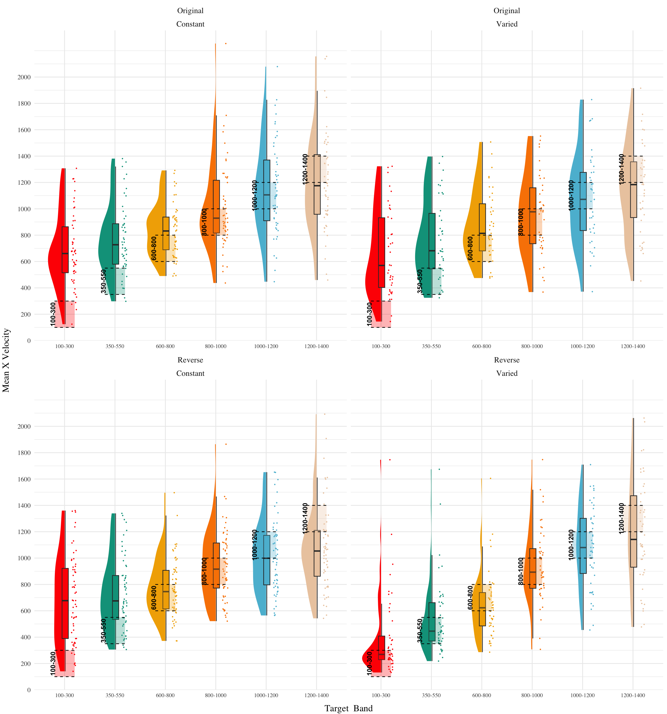
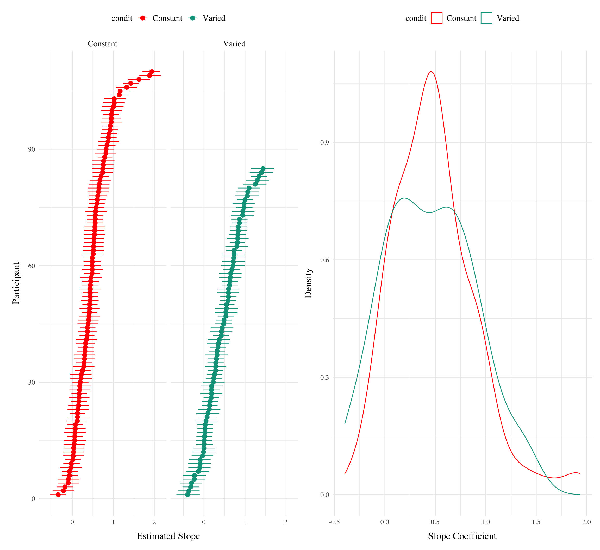
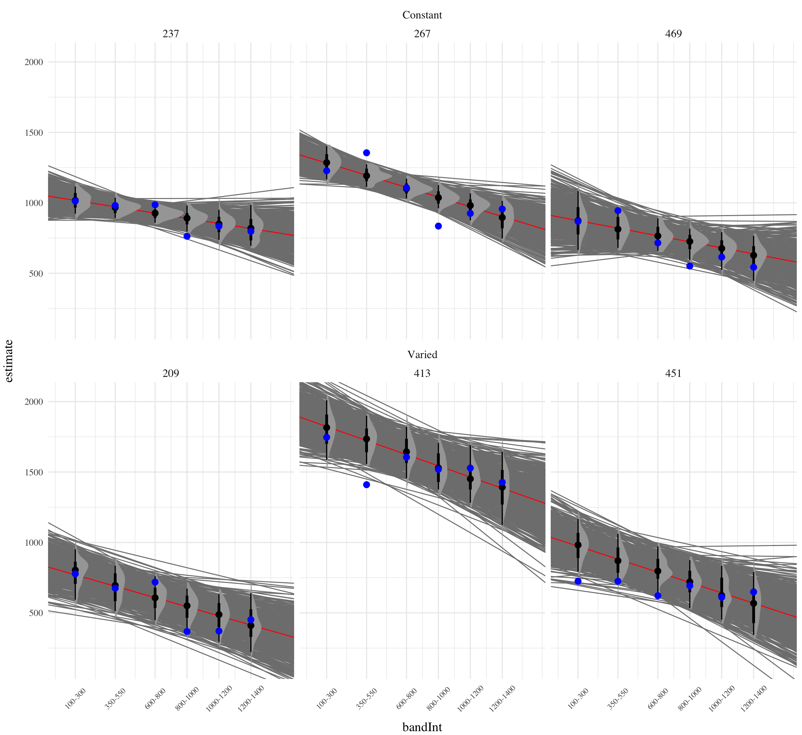

HTW E3 Testing
Analysis
R
Bayesian
The major manipulation adjustment of experiment 3 is for participants to receive ordinal feedback during training, in contrast to the continuous feedback of the earlier experiments. Ordinal feedback informs participants whether a throw was too soft, too hard, or fell within the target velocity range. Experiment 3 participants were randomly assigned to both a training condition (Constant vs. Varied) and a Band Order condition (original order used in Experiment 1, or the Reverse order of Experiment 2).
Results
Testing Phase - No feedback.
In the first part of the testing phase, participants are tested from each of the velocity bands, and receive no feedback after each throw. Note that these no-feedback testing trials are identical to those of Experiment 1 and 2, as the ordinal feedback only occurs during the training phase, and final testing phase, of Experiment 3.
Deviation From Target Band
Descriptive summaries testing deviation data are provided in Table 1 and Figure 1. To model differences in accuracy between groups, we fit Bayesian mixed effects regression models to the trial level data from the testing phase. The primary model predicted the absolute deviation from the target velocity band (dist) as a function of training condition (condit), target velocity band (band), and their interaction, with random intercepts and slopes for each participant (id).
# A tibble: 6 × 5
Band `Band Type` Mean Median Sd
<fct> <fct> <dbl> <dbl> <dbl>
1 100-300 Extrapolation 396 325 350
2 350-550 Extrapolation 278 176 299
3 600-800 Extrapolation 173 102 215
4 800-1000 Trained 225 126 284
5 1000-1200 Extrapolation 253 192 271
6 1200-1400 Extrapolation 277 210 262# A tibble: 6 × 5
Band `Band Type` Mean Median Sd
<fct> <fct> <dbl> <dbl> <dbl>
1 100-300 Extrapolation 383 254 385
2 350-550 Extrapolation 287 154 318
3 600-800 Extrapolation 213 140 244
4 800-1000 Trained 199 142 209
5 1000-1200 Trained 222 163 221
6 1200-1400 Trained 281 227 246# A tibble: 6 × 5
Band `Band Type` Mean Median Sd
<fct> <fct> <dbl> <dbl> <dbl>
1 100-300 Extrapolation 403 334 383
2 350-550 Extrapolation 246 149 287
3 600-800 Trained 155 82 209
4 800-1000 Extrapolation 207 151 241
5 1000-1200 Extrapolation 248 220 222
6 1200-1400 Extrapolation 322 281 264# A tibble: 6 × 5
Band `Band Type` Mean Median Sd
<fct> <fct> <dbl> <dbl> <dbl>
1 100-300 Trained 153 0 307
2 350-550 Trained 147 55 258
3 600-800 Trained 159 107 192
4 800-1000 Extrapolation 221 160 235
5 1000-1200 Extrapolation 244 185 235
6 1200-1400 Extrapolation 324 264 291| Term | Estimate | 95% CrI Lower | 95% CrI Upper | pd |
|---|---|---|---|---|
| Intercept | 306.47 | 243.89 | 368.75 | 1.00 |
| conditVaried | -90.65 | -182.79 | 3.75 | 0.97 |
| Band | -0.07 | -0.13 | 0.00 | 0.97 |
| condit*Band | 0.09 | -0.01 | 0.19 | 0.96 |
The effect of training condition in Experiment 3 showed a similar pattern to Experiment 2, with the varied group tending to have lower deviation than the constant group (β = -90.65, 95% CrI [-182.79, 3.75]), with 97% of the posterior distribution falling under 0.
(NEED TO CONTROL FOR BAND ORDER HERE)

Discrimination between Velocity Bands
In addition to accuracy/deviation. We also assessed the ability of participants to reliably discriminate between the velocity bands (i.e. responding differently when prompted for band 600-800 than when prompted for band 150-350). Table 3 shows descriptive statistics of this measure, and Figure 1 visualizes the full distributions of throws for each combination of condition and velocity band. To quantify discrimination, we again fit Bayesian Mixed Models as above, but this time the dependent variable was the raw x velocity generated by participants.
\[\begin{equation} vx_{ij} = \beta_0 + \beta_1 \cdot condit_{ij} + \beta_2 \cdot bandInt_{ij} + \beta_3 \cdot condit_{ij} \cdot bandInt_{ij} + b_{0i} + b_{1i} \cdot bandInt_{ij} + \epsilon_{ij} \end{equation}\]

# A tibble: 6 × 5
Band `Band Type` Mean Median Sd
<fct> <fct> <dbl> <dbl> <dbl>
1 100-300 Extrapolation 680 625 370
2 350-550 Extrapolation 771 716 357
3 600-800 Extrapolation 832 786 318
4 800-1000 Trained 1006 916 417
5 1000-1200 Extrapolation 1149 1105 441
6 1200-1400 Extrapolation 1180 1112 443# A tibble: 6 × 5
Band `Band Type` Mean Median Sd
<fct> <fct> <dbl> <dbl> <dbl>
1 100-300 Extrapolation 667 554 403
2 350-550 Extrapolation 770 688 383
3 600-800 Extrapolation 869 814 358
4 800-1000 Trained 953 928 359
5 1000-1200 Trained 1072 1066 388
6 1200-1400 Trained 1144 1093 426# A tibble: 6 × 5
Band `Band Type` Mean Median Sd
<fct> <fct> <dbl> <dbl> <dbl>
1 100-300 Extrapolation 684 634 406
2 350-550 Extrapolation 729 679 350
3 600-800 Trained 776 721 318
4 800-1000 Extrapolation 941 883 387
5 1000-1200 Extrapolation 1014 956 403
6 1200-1400 Extrapolation 1072 1014 442# A tibble: 6 × 5
Band `Band Type` Mean Median Sd
<fct> <fct> <dbl> <dbl> <dbl>
1 100-300 Trained 392 270 343
2 350-550 Trained 540 442 343
3 600-800 Trained 642 588 315
4 800-1000 Extrapolation 943 899 394
5 1000-1200 Extrapolation 1081 1048 415
6 1200-1400 Extrapolation 1185 1129 500| Term | Estimate | 95% CrI Lower | 95% CrI Upper | pd |
|---|---|---|---|---|
| Intercept | 607.67 | 536.02 | 679.87 | 1 |
| conditVaried | -167.76 | -277.14 | -64.08 | 1 |
| Band | 0.44 | 0.35 | 0.52 | 1 |
| condit*Band | 0.18 | 0.06 | 0.31 | 1 |
See Table 4 for the full model results.
Slope estimates for experiment 3 suggest that participants were capable of distinguishing between velocity bands even when provided only ordinal feedback during training (β = 0.44, 95% CrI [0.35, 0.52]). Unlike the previous two experiments, the posterior distribution for the interaction between condition and band was consistently positive, suggestive of superior discrimination for the varied participants β = 0.18, 95% CrI [0.06, 0.31].

| Condition | Q_0%_mean | Q_25%_mean | Q_50%_mean | Q_75%_mean | Q_100%_mean |
|---|---|---|---|---|---|
| Constant | -0.3521570 | 0.1168704 | 0.4250777 | 0.639752 | 1.934746 |
| Varied | -0.3163725 | 0.2536790 | 0.5968129 | 0.916012 | 1.747790 |
Figure 5 shows the distributions of estimated slopes relating velocity band to x velocity for each participant, ordered from lowest to highest within condition. Slope values are lower overall for varied training compared to constant training. Figure Xb plots the density of these slopes for each condition. The distribution for varied training has more mass at lower values than the constant training distribution. Both figures illustrate the model’s estimate that varied training resulted in less discrimination between velocity bands, evidenced by lower slopes on average.



